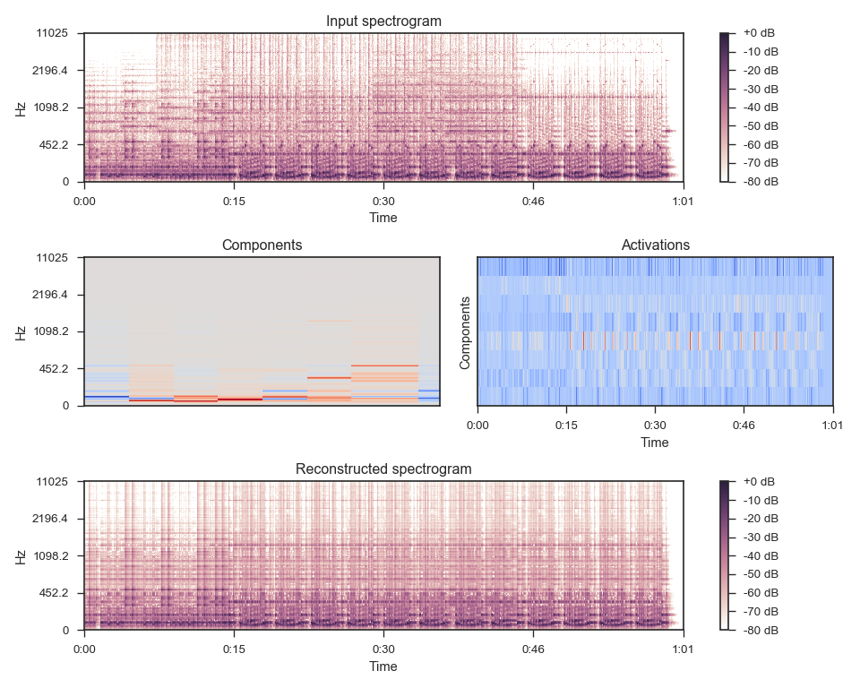

librosa.decompose.decompose¶
-
librosa.decompose.decompose(S, n_components=None, transformer=None, sort=False, fit=True, **kwargs)[source]¶ Decompose a feature matrix.
Given a spectrogram S, produce a decomposition into components and activations such that S ~= components.dot(activations).
By default, this is done with with non-negative matrix factorization (NMF), but any
sklearn.decomposition-type object will work.Parameters: - S : np.ndarray [shape=(n_features, n_samples), dtype=float]
The input feature matrix (e.g., magnitude spectrogram)
- n_components : int > 0 [scalar] or None
number of desired components
if None, then n_features components are used
- transformer : None or object
If None, use
sklearn.decomposition.NMFOtherwise, any object with a similar interface to NMF should work. transformer must follow the scikit-learn convention, where input data is (n_samples, n_features).
transformer.fit_transform() will be run on S.T (not S), the return value of which is stored (transposed) as activations
The components will be retrieved as transformer.components_.T
S ~= np.dot(activations, transformer.components_).T
or equivalently: S ~= np.dot(transformer.components_.T, activations.T)
- sort : bool
If True, components are sorted by ascending peak frequency.
Note
If used with transformer, sorting is applied to copies of the decomposition parameters, and not to transformer’s internal parameters.
- fit : bool
If True, components are estimated from the input
S.If False, components are assumed to be pre-computed and stored in
transformer, and are not changed.- kwargs : Additional keyword arguments to the default transformer
Returns: - components: np.ndarray [shape=(n_features, n_components)]
matrix of components (basis elements).
- activations: np.ndarray [shape=(n_components, n_samples)]
transformed matrix/activation matrix
Raises: - ParameterError
if fit is False and no transformer object is provided.
See also
sklearn.decomposition- SciKit-Learn matrix decomposition modules
Examples
Decompose a magnitude spectrogram into 32 components with NMF
>>> y, sr = librosa.load(librosa.util.example_audio_file()) >>> S = np.abs(librosa.stft(y)) >>> comps, acts = librosa.decompose.decompose(S, n_components=8) >>> comps array([[ 1.876e-01, 5.559e-02, ..., 1.687e-01, 4.907e-02], [ 3.148e-01, 1.719e-01, ..., 2.314e-01, 9.493e-02], ..., [ 1.561e-07, 8.564e-08, ..., 7.167e-08, 4.997e-08], [ 1.531e-07, 7.880e-08, ..., 5.632e-08, 4.028e-08]]) >>> acts array([[ 4.197e-05, 8.512e-03, ..., 3.056e-05, 9.159e-06], [ 9.568e-06, 1.718e-02, ..., 3.322e-05, 7.869e-06], ..., [ 5.982e-05, 1.311e-02, ..., -0.000e+00, 6.323e-06], [ 3.782e-05, 7.056e-03, ..., 3.290e-05, -0.000e+00]])
Sort components by ascending peak frequency
>>> comps, acts = librosa.decompose.decompose(S, n_components=8, ... sort=True)
Or with sparse dictionary learning
>>> import sklearn.decomposition >>> T = sklearn.decomposition.MiniBatchDictionaryLearning(n_components=8) >>> comps, acts = librosa.decompose.decompose(S, transformer=T, sort=True)
>>> import matplotlib.pyplot as plt >>> plt.figure(figsize=(10,8)) >>> plt.subplot(3, 1, 1) >>> librosa.display.specshow(librosa.logamplitude(S**2, ... ref_power=np.max), ... y_axis='log', x_axis='time') >>> plt.title('Input spectrogram') >>> plt.colorbar(format='%+2.0f dB') >>> plt.subplot(3, 2, 3) >>> librosa.display.specshow(comps, y_axis='log') >>> plt.title('Components') >>> plt.subplot(3, 2, 4) >>> librosa.display.specshow(acts, x_axis='time') >>> plt.ylabel('Components') >>> plt.title('Activations') >>> plt.subplot(3, 1, 3) >>> S_approx = comps.dot(acts) >>> librosa.display.specshow(librosa.logamplitude(S_approx**2, ... ref_power=np.max), ... y_axis='log', x_axis='time') >>> plt.colorbar(format='%+2.0f dB') >>> plt.title('Reconstructed spectrogram') >>> plt.tight_layout()
